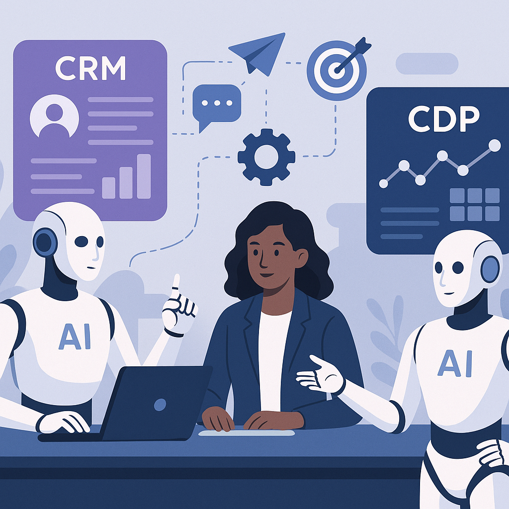
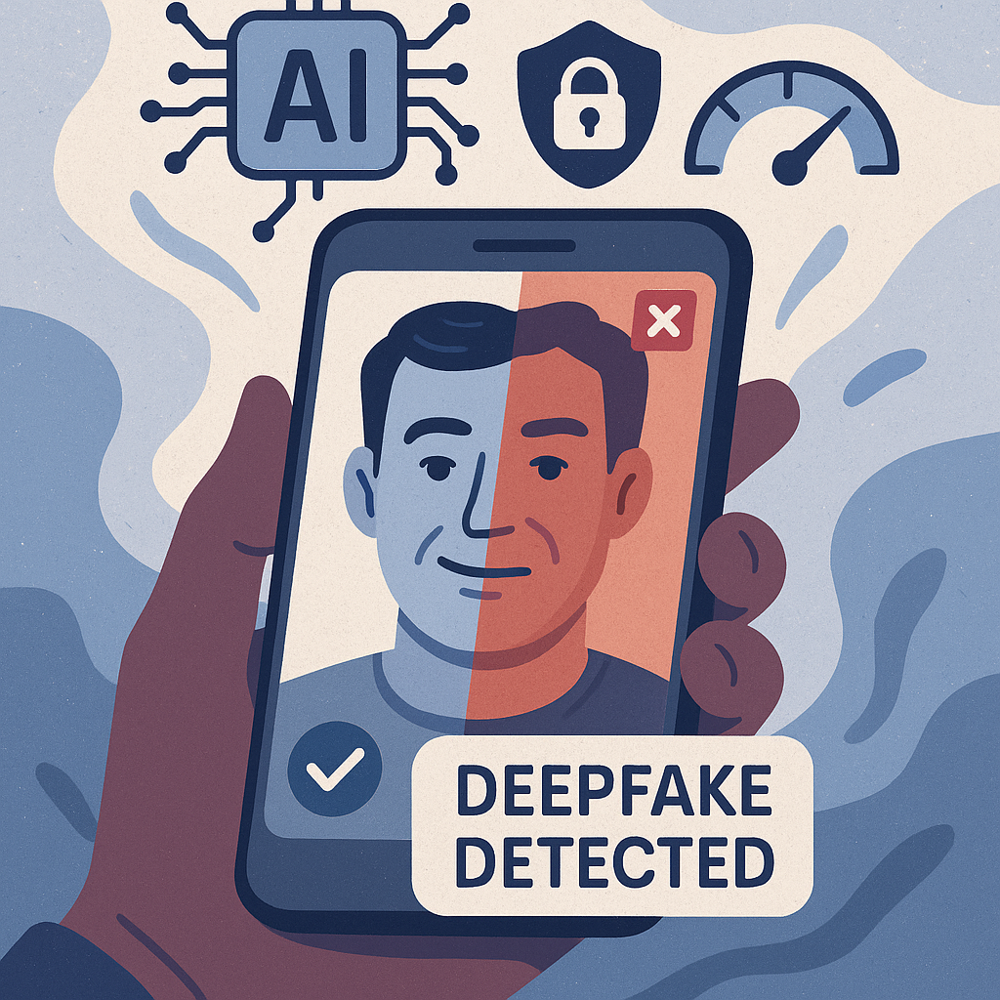

Publishing Recommendation
reviseSome posts contain vague claims and lack concise insights, risking sounding AI-generated or overly promotional.
Today's drafts show potential but need refinement to fit the brand voice. Posts on WhatsApp impersonation and Apple's privacy issue lack clarity and specific evidence to support claims, risking credibility. Meanwhile, some posts could benefit from tighter language to avoid sounding overly promotional or AI-generated. A revision focusing on specificity and practical insights will enhance the content's effectiveness.
LinkedIn Posts (10)
1. WhatsApp usernames are already raising impersonation red flags ★ Purands solution · high priority
CTA: How is your business addressing trust issues on WhatsApp?
{kind=link}
Image prompt · isometric-flat
Caption: AI agents enhancing security in WhatsApp commerce.
Alternative hooks
- When privacy turns into a problem: WhatsApp usernames.
- Impersonation risks: the unintended side effect of WhatsApp usernames.
- Is WhatsApp's latest feature putting your business at risk?
Research behind this post (sources, summaries & confidence)
WhatsApp usernames are already raising impersonation red flags conf 0.80 · WhatsApp commerce
As WhatsApp continues to evolve as a commerce platform, security issues like impersonation can impact trust and adoption. This is especially pertinent in APAC where WhatsApp is a key commerce channel.
Sources & what I took from each
- WhatsApp usernames are causing impersonation issues.: Multiple reports and expert opinions indicate that the introduction of usernames on WhatsApp has led to increased impersonation cases, as users can adopt similar or identical usernames to impersonate others. ↗ read source
- Critics question Meta's safeguards.: Security experts have criticized Meta for not implementing sufficient safeguards to prevent impersonation, particularly in commerce contexts where trust is crucial. ↗ read source
Recent news
- {'headline': 'WhatsApp usernames spark security debate amid rising impersonation cases', 'source': 'TechCrunch', 'date': '2026-07-01'}
Original trend links
Risks / caveats
- Potential loss of consumer trust in WhatsApp as a secure commerce platform.
- Increased number of scams and fraudulent activities.
2. Dick’s adds paid loyalty tier for $99 a year ★ Purands solution · high priority
CTA: How do you see paid loyalty tiers affecting customer engagement long-term?
Alternative hooks
- Dick's Sporting Goods bets on premium loyalty.
- Paid loyalty: A $99 key to customer insights.
- Why Dick's $99 loyalty program is more than just a perk.
Research behind this post (sources, summaries & confidence)
Dick’s adds paid loyalty tier for $99 a year conf 0.80 · Loyalty
Innovative loyalty program formats like paid membership tiers can enhance customer retention and provide insights into premium customer behavior.
Sources & what I took from each
- Dick’s Sporting Goods introduced a paid loyalty tier.: The company has publicly announced the addition of a $99 annual paid loyalty program aimed at enhancing customer engagement and retention. ↗ read source
Recent news
- {'headline': 'Dick’s Sporting Goods launches $99/year paid loyalty program', 'source': 'Retail Dive', 'date': '2026-06-30'}
Original trend links
Risks / caveats
- Potential backlash if perceived as not providing sufficient value.
- Challenges in convincing customers to pay for loyalty benefits.
3. Apple's Hide My Email feature has a bug that’s been exposing real email addresses ★ Purands solution · high priority
CTA: How does your company ensure data privacy in customer interactions?
{kind=link}
Image prompt · flat-vector
Caption: Data privacy in AI-driven marketing platforms.
Alternative hooks
- Privacy breaches can shake customer trust like nothing else.
- Exposing real email addresses isn't just a tech glitch; it's a wake-up call.
- In the world of CRM, data privacy is non-negotiable.
Research behind this post (sources, summaries & confidence)
Apple's Hide My Email feature has a bug that’s been exposing real email addresses conf 0.75 · CRM
Privacy concerns in CRM systems can lead to customer churn. Ensuring data protection is crucial for customer trust, especially in retention-focused strategies.
Sources & what I took from each
- Bug in Apple's Hide My Email feature exposes real email addresses.: Security researchers have identified and reported a bug in the feature that compromises user privacy by revealing real email addresses. ↗ read source
Recent news
- {'headline': "Apple's Hide My Email feature under scrutiny after privacy bug revelation", 'source': 'TechCrunch', 'date': '2026-07-01'}
Original trend links
Risks / caveats
- Loss of customer trust in Apple's privacy measures.
- Potential legal implications and need for urgent patch updates.
4. Deploying retail AI to scale personalisation and customer insight ★ Purands solution · high priority
CTA: How is your brand using AI to enhance customer interactions?
Alternative hooks
- Retailers in APAC are turning to AI for a personalization overhaul.
- Static customer interactions are making way for AI-driven insights.
- Personalization isn't just a trend; it's a retention strategy.
Research behind this post (sources, summaries & confidence)
Deploying retail AI to scale personalisation and customer insight conf 0.70 · Retention marketing
Personalisation at scale is a key driver of customer retention and engagement. This trend underscores the need for AI in transforming customer interaction strategies.
Sources & what I took from each
- AI is used to optimize retail personalization.: Reports indicate that AI technologies are increasingly being integrated into retail systems to enhance personalization and customer insights. ↗ read source
Recent news
- {'headline': 'Retailers leverage AI for enhanced customer insights and personalization', 'source': 'Artificial Intelligence News', 'date': '2026-06-29'}
Original trend links
Risks / caveats
- Data privacy issues with personalized marketing.
- Potential for AI bias affecting customer interactions.
5. Strategic Partnerships in Retention Marketing ★ Purands solution · high priority
CTA: How do you see strategic partnerships influencing customer retention in your industry?
Alternative hooks
- Under Armour's latest move in the APAC market is more than a partnership.
- Strategic partnerships are reshaping retention marketing in competitive markets.
- What does Under Armour's partnership with Feng Chen Wang tell us about customer engagement?
Research behind this post (sources, summaries & confidence)
Under Armour partners with Feng Chen Wang on women’s strategy conf 0.70 · Retention marketing
Strategic partnerships for targeted customer segments can drive retention and engagement by offering tailored experiences, crucial in competitive markets.
Sources & what I took from each
- Under Armour has partnered with Feng Chen Wang.: The partnership was officially announced to develop and enhance Under Armour's women's strategy, focusing on brand engagement. ↗ read source
Recent news
- {'headline': "Under Armour teams up with Feng Chen Wang to boost women's strategy", 'source': 'Retail Dive', 'date': '2026-06-23'}
Original trend links
Risks / caveats
- Failure to meet partnership goals could affect brand reputation.
- Competition in women's sports apparel market is intense.
6. Building an AI Engineering Team with AI Agents ★ Purands solution · high priority
CTA: How have AI agents changed your team's operations?

⬇ Download image{kind=link}
Image prompt · modern-professional
Caption: AI agents revolutionizing marketing operations.
Alternative hooks
- AI agents are reshaping engineering teams-what about marketing?
- Integrating AI agents into teams isn't just for engineers.
- How do AI agents enhance marketing operations?
Research behind this post (sources, summaries & confidence)
Building an AI Engineering Team with AI Agents conf 0.65 · AI in business
The growing role of AI agents in engineering teams highlights their potential in automating and optimizing marketing and customer engagement processes.
Sources & what I took from each
- AI agents are being integrated into engineering teams.: LinkedIn posts from industry professionals discuss the use of AI agents for team building and enhancing operational efficiency. ↗ read source
Recent news
- {'headline': 'AI agents are becoming integral to engineering team structures', 'source': 'LinkedIn', 'date': '2026-06-24'}
Original trend links
Risks / caveats
- Potential resistance from staff due to AI integration.
- Need for retraining and skill development in teams.
7. Neocloud Together AI raises $800M, leaps to $8.3B valuation
CTA: Are we seeing the beginning of a new focus on infrastructure in AI startups?
Caption: Neocloud's valuation jump with new funding.
Alternative hooks
- Neocloud Together AI's valuation soared by 151.5%.
- An $800M funding round just transformed Neocloud Together AI.
- What's driving Neocloud Together AI's $8.3B valuation?
Research behind this post (sources, summaries & confidence)
Neocloud Together AI raises $800M, leaps to $8.3B valuation conf 0.90 · AI startups
The substantial funding round and valuation increase highlight significant investor confidence in AI infrastructure, critical for scaling AI-based retention marketing solutions.
Sources & what I took from each
- Neocloud Together AI raised $800M.: Confirmed by official announcements and coverage in credible financial news outlets. ↗ read source
- Valuation increased to $8.3B from $3.3B.: The valuation jump is supported by investor reports and press releases from investment firms. ↗ read source
Statistics
- {'statistic': "Neocloud Together AI's valuation increased by 151.5% after the funding round."}
Recent news
- {'headline': 'Neocloud Together AI secures $800M in funding, skyrockets valuation', 'source': 'TechCrunch', 'date': '2026-07-01'}
Original trend links
Risks / caveats
- Market volatility could affect future valuations.
- Reliance on investor confidence may not be sustainable long-term without proven revenue streams.
8. Anthropic is bringing back Claude Fable 5 globally after US lifts export control order
CTA: How do you see global access to Claude Fable 5 impacting your industry?
Alternative hooks
- Claude Fable 5 is back on the global stage.
- US export control lifted, Claude Fable 5 goes global.
- What does global access to Claude Fable 5 mean for AI marketing?
Research behind this post (sources, summaries & confidence)
Anthropic is bringing back Claude Fable 5 globally after US lifts export control order conf 0.90 · AI startups
Global access to advanced AI models like Claude Fable 5 can enhance capabilities in AI-powered marketing solutions, offering new tools for personalization and automation.
Sources & what I took from each
- US lifted export control on Claude Fable 5.: Official reports confirm that the US government has lifted the export control order, allowing the model to be sold globally. ↗ read source
- Anthropic's Claude Fable 5 is available globally.: Company announcements indicate that the model is now available for global enterprise use, enhancing AI capabilities worldwide. ↗ read source
Recent news
- {'headline': "Anthropic's Claude Fable 5 available globally after export controls lifted", 'source': 'VentureBeat', 'date': '2026-06-30'}
Original trend links
Risks / caveats
- Potential geopolitical tensions affecting future export policies.
- Competition from other AI models in the global market.
9. Scam.ai announces Qualcomm partnership, launches Halo Deepfake Detection Model
CTA: What implications do you see for marketing as deepfake detection technology evolves?

⬇ Download image{kind=link}
Image prompt · editorial
Caption: On-device deepfake detection for enhanced privacy.
Alternative hooks
- Deepfakes aren't just sci-fi anymore, and Scam.ai's latest innovation might be our best defense.
- How can we trust what we see online? A new model might have the answer.
- The future of deepfake detection could be in your pocket, thanks to a new partnership.
Research behind this post (sources, summaries & confidence)
Scam.ai announces Qualcomm partnership, launches Halo Deepfake Detection Model conf 0.85 · AI startups
Deepfake detection is crucial for maintaining the integrity of digital interactions, which directly affects customer trust and engagement in digital marketing channels.
Sources & what I took from each
- Scam.ai partnered with Qualcomm.: The partnership was officially announced at Computex 2026, with both companies releasing joint statements. ↗ read source
- Launch of Halo Deepfake Detection Model.: The model's launch was highlighted in industry news, emphasizing its on-device capabilities which are critical for privacy and efficiency. ↗ read source
Recent news
- {'headline': 'Scam.ai partners with Qualcomm to launch new deepfake detection model', 'source': 'Artificial Intelligence News', 'date': '2026-06-30'}
Original trend links
Risks / caveats
- Technical challenges in real-time deepfake detection.
- Potential privacy concerns with on-device processing.
10. Bending Spoons defies SaaS slump, surges 40% on first day of trading
CTA: How do you see the role of legacy tech in today's tech landscape?
Caption: Bending Spoons' stock surge on trading debut.
Alternative hooks
- A 40% stock surge in one day has everyone talking.
- Bending Spoons is making waves with its unconventional strategy.
- Legacy tech as a growth strategy? Bending Spoons has the answer.
Research behind this post (sources, summaries & confidence)
Bending Spoons defies SaaS slump, surges 40% on first day of trading conf 0.85 · SaaS
The success of Bending Spoons in a challenging SaaS environment highlights the potential for strategic acquisitions and innovations in revamping legacy tech.
Sources & what I took from each
- Bending Spoons' stock surged 40% on its first trading day.: Market reports and financial news confirm the significant increase in stock value following its IPO. ↗ read source
- Bending Spoons focuses on acquiring and revamping legacy brands.: Company strategy details emphasize leveraging acquisitions to penetrate the market and innovate legacy technologies. ↗ read source
Statistics
- {'statistic': "Bending Spoons' stock value increased by 40% on the first day."}
Recent news
- {'headline': 'Bending Spoons makes a strong debut with a 40% stock surge', 'source': 'TechCrunch', 'date': '2026-07-01'}
Original trend links
Risks / caveats
- Market fluctuations could affect ongoing stock performance.
- Sustainability of growth reliant on successful integration of acquired brands.
Today's Trends
| # | Trend | Category | Why it matters |
|---|---|---|---|
| 1 | WhatsApp usernames are already raising impersonation red flags
source |
WhatsApp commerce | As WhatsApp continues to evolve as a commerce platform, security issues like impersonation can impact trust and adoption. This is especially pertinent in APAC where WhatsApp is a key commerce channel. |
| 2 | Neocloud Together AI raises $800M, leaps to $8.3B valuation
source |
AI startups | The substantial funding round and valuation increase highlight significant investor confidence in AI infrastructure, critical for scaling AI-based retention marketing solutions. |
| 3 | Scam.ai announces Qualcomm partnership, launches Halo Deepfake Detection Model
source |
AI startups | Deepfake detection is crucial for maintaining the integrity of digital interactions, which directly affects customer trust and engagement in digital marketing channels. |
| 4 | Deploying retail AI to scale personalisation and customer insight
source |
Retention marketing | Personalisation at scale is a key driver of customer retention and engagement. This trend underscores the need for AI in transforming customer interaction strategies. |
| 5 | Apple's Hide My Email feature has a bug that’s been exposing real email addresses
source |
CRM | Privacy concerns in CRM systems can lead to customer churn. Ensuring data protection is crucial for customer trust, especially in retention-focused strategies. |
| 6 | Dick’s adds paid loyalty tier for $99 a year
source |
Loyalty | Innovative loyalty program formats like paid membership tiers can enhance customer retention and provide insights into premium customer behavior. |
| 7 | Bending Spoons defies SaaS slump, surges 40% on first day of trading
source |
SaaS | The success of Bending Spoons in a challenging SaaS environment highlights the potential for strategic acquisitions and innovations in revamping legacy tech. |
| 8 | Anthropic is bringing back Claude Fable 5 globally after US lifts export control order
source |
AI startups | Global access to advanced AI models like Claude Fable 5 can enhance capabilities in AI-powered marketing solutions, offering new tools for personalization and automation. |
| 9 | Advances in Natural Language Processing Are Changing Professional Networking
source |
AI in business | NLP advancements are reshaping professional networking, which can have implications for CRM and customer engagement strategies, enhancing relationship management. |
| 10 | The Control Gap: Enterprise AI organizations have an ownership problem, not a technology problem
source |
AI in business | Addressing governance and ownership issues in AI deployment is crucial for the successful integration of AI in business operations, impacting retention strategies. |
| 11 | Japanese AI model for 10 million robots
source |
APAC commerce dynamics | Japan's ambitious AI strategy for robotics underscores the region's commitment to AI integration in commerce and industry, reflecting APAC's mobile-first and automation-focused market dynamics. |
| 12 | HP accelerates enterprise workflows with OpenAI Frontier
source |
AI in business | Integration of AI models like OpenAI Frontier in enterprise workflows can significantly enhance efficiency and automation in retention marketing operations. |
| 13 | Building an AI Engineering Team with AI Agents
source |
AI in business | The growing role of AI agents in engineering teams highlights their potential in automating and optimizing marketing and customer engagement processes. |
| 14 | Under Armour partners with Feng Chen Wang on women’s strategy
source |
Retention marketing | Strategic partnerships for targeted customer segments can drive retention and engagement by offering tailored experiences, crucial in competitive markets. |
Risk Assessment
- Vague claims in WhatsApp and Apple posts could confuse readers.
- Exaggerated benefits of AI integration without substantial evidence.
- Potential over-promotion of Purands AI's capabilities without specific examples or case studies.
Suggested LinkedIn Comments (30)
Open each post, then paste the copied comment. Nothing is posted automatically.
1. insight · Santosh Chebbi — Building an AI Engineering Team with AI Agents
Post by: Santosh Chebbi
Why it works: It highlights the practical integration of AI agents into team dynamics, adding depth to the post's concept.
↗ Open LinkedIn post to paste comment2. insight · Nayan Parakh — What if your 𝐧𝐞𝐱𝐭 𝐇𝐑 𝐭𝐞𝐚𝐦 𝐦𝐞𝐦𝐛𝐞𝐫 was an AI agent? 🤖 That's the question I explo
Post by: Nayan Parakh
Why it works: It underscores the practical benefits of using AI agents in HR, emphasizing reliability and accuracy.
↗ Open LinkedIn post to paste comment3. expansion · Logistics Guide — 🤖 What if your next supplier negotiation isn't with another procurement manager,
Post by: Logistics Guide
Why it works: The comment expands the discussion by focusing on the benefits of AI agents in procurement efficiency and reducing errors.
↗ Open LinkedIn post to paste comment4. insight · M Hassaan Saleem — AI agents forget the context across sessions. Sometimes even in the same chat, o
Post by: M Hassaan Saleem
Why it works: It draws attention to a specific issue with AI agents, offering a practical solution that aligns with the post's focus.
↗ Open LinkedIn post to paste comment5. opinion · Beegee Alop — I’m increasingly convinced there are only two types of AI agents: Stateful agen
Post by: Beegee Alop
Why it works: It agrees with and elaborates on the concept of statefulness, emphasizing its importance in AI agent development.
↗ Open LinkedIn post to paste comment6. insight · Rrashi Gupta — 🤖 AI agents are no longer a futuristic concept they're transforming how enterpri
Post by: Rrashi Gupta
Why it works: The comment emphasizes the importance of partner selection in AI integration, adding a practical angle to the discussion.
↗ Open LinkedIn post to paste comment7. insight · John Hargrave — Everyone is talking about AI chatbots. They're looking at the wrong thing. The
Post by: John Hargrave
Why it works: It highlights the practical implications of AI agents, tying back to the post's demonstration of workflow completion.
↗ Open LinkedIn post to paste comment8. expansion · ZAIN KHAN — The Autonomous Sales Frontier: How AI Agents are Reshaping B2B Growth The landsc
Post by: ZAIN KHAN
Why it works: The comment expands on the transformational impact of AI in B2B sales, aligning with the post's emphasis on fundamental change.
↗ Open LinkedIn post to paste comment9. insight · Deriv — We built an AI brain to run our AI agents across 150,000 partners. Read the full
Post by: Deriv
Why it works: It highlights the scalability and complexity management benefits of AI, adding a layer of understanding to the post.
↗ Open LinkedIn post to paste comment10. insight · Zoë Walters — 35% of businesses already use AI agents. Another 44% are preparing to. The nex
Post by: Zoë Walters
Why it works: It reinforces the post's argument by focusing on the competitive advantage of integrating AI into HR workflows.
↗ Open LinkedIn post to paste comment11. insight · Diploma Computer Engineering - Marwadi Univesity — 🚀 Our First LinkedIn Article is Live! Artificial Intelligence is evolving rapid
Post by: Diploma Computer Engineering - Marwadi Univesity
Why it works: It connects the importance of learning AI agents to real-world impact, offering a practical perspective to the audience.
↗ Open LinkedIn post to paste comment12. insight · Valentina Jordan — 4/5 potential clients I have talked to this week don't really know what an AI ag
Post by: Valentina Jordan
Why it works: It addresses the real challenge of demystifying AI for better decision-making, adding depth to the original post.
↗ Open LinkedIn post to paste comment13. expansion · Pawan Kamble — Just published a new piece: Why Most AI Startups Sound Identical The central ar
Post by: Pawan Kamble
Why it works: It expands on the original point by suggesting a strategic approach for startups to differentiate themselves.
↗ Open LinkedIn post to paste comment14. expansion · ViWear — Thank you, Female Ventures Rotterdam, for featuring ViWear and sharing the story
Post by: ViWear
Why it works: It highlights the innovative use of AI in fashion, expanding on the post's theme of personal and sustainable tech.
↗ Open LinkedIn post to paste comment15. insight · Doug Nissinoff — I'm thrilled to announce that we've launched the IV Accelerator, the new acceler
Post by: Doug Nissinoff
Why it works: It highlights the unique value proposition of the accelerator, emphasizing the importance of comprehensive support.
↗ Open LinkedIn post to paste comment16. insight · Shubham Palriwala — Building AI agents at a Seed–Series B startup? I'm looking to chat with AI engi
Post by: Shubham Palriwala
Why it works: It underscores the value of direct interactions for deeper insights, supporting the post's call for engagement.
↗ Open LinkedIn post to paste comment17. insight · Vladyslava Maksymenko — 🔥 𝗖𝗼‐𝗙𝗼𝘂𝗻𝗱𝗲𝗿 – 𝗔𝗿𝘁𝗶𝗳𝗶𝗰𝗶𝗮𝗹 𝗜𝗻𝘁𝗲𝗹𝗹𝗶𝗴𝗲𝗻𝗰𝗲 📍 𝗧𝗼𝗿𝗼𝗻𝘁𝗼, 𝗖𝗮𝗻𝗮𝗱𝗮 (𝗥𝗲𝗺𝗼𝘁𝗲 𝗢𝗽𝗽𝗼𝗿𝘁𝘂𝗻𝗶𝘁𝘆)
Post by: Vladyslava Maksymenko
Why it works: It highlights the strategic advantage of the venture studio model, adding a layer of analysis to the post.
↗ Open LinkedIn post to paste comment18. insight · Christian Bugia — If you're in investment banking and have ever wondered what it would be like to
Post by: Christian Bugia
Why it works: It emphasizes the strategic and learning opportunities inherent in the role, appealing to potential candidates.
↗ Open LinkedIn post to paste comment19. expansion · Irene Bello — The United States remains at the forefront of global artificial intelligence dev
Post by: Irene Bello
Why it works: It expands on the post by linking technological leadership to broader global impacts and standards.
↗ Open LinkedIn post to paste comment20. insight · Matthew Thomson — Just got some interesting new research from AWS Startups. This spanned more than
Post by: Matthew Thomson
Why it works: It highlights measurable impacts of generative AI, reinforcing the potential for growth and innovation in the sector.
↗ Open LinkedIn post to paste comment21. respectful challenge · Ben Cera — I raised $30M for my zero employee startup. My AI told me we should do an offsi
Post by: Ben Cera
Why it works: It adds a critical perspective on balancing AI's suggestions with practical business strategy.
↗ Open LinkedIn post to paste comment22. insight · Yurii P. — From Claude and ChatGPT to Gemini and 400+ other models, AI is becoming a core b
Post by: Yurii P.
Why it works: It emphasizes the importance of tailoring AI to business needs, adding depth to the post.
↗ Open LinkedIn post to paste comment23. insight · BIZCON LEGAL LLP — 10 Legal Mistakes AI Startups Make Before Signing Their First Enterprise Client
Post by: BIZCON LEGAL LLP
Why it works: It underscores the importance of legal strategy, adding value to the discussion on enterprise readiness.
↗ Open LinkedIn post to paste comment24. expansion · Anna Valcheva — Every Healthcare AI startup now claims to have "AI", but only a small number wil
Post by: Anna Valcheva
Why it works: It expands on the idea of embedding AI into clinical workflows, adding a practical layer to the post.
↗ Open LinkedIn post to paste comment25. opinion · Techsagar – India’s Emerging Tech Repository — #TechsagarAsks | With the rise in AI influx in managing workloads, according to
Post by: Techsagar – India’s Emerging Tech Repository
Why it works: It provides a focused opinion on which technologies might be crucial, adding specificity to the post's question.
↗ Open LinkedIn post to paste comment26. insight · Sajjaad Khader — AI will create MILLIONS of jobs over the next 5 years. I asked AI infrastructur
Post by: Sajjaad Khader
Why it works: It offers a nuanced take on the role of AI consultants, emphasizing industry-specific knowledge.
↗ Open LinkedIn post to paste comment27. expansion · Value Driver Technology Solutions Ltd. — Digital technologies continue to fuel economic growth, create new industries, an
Post by: Value Driver Technology Solutions Ltd.
Why it works: It broadens the discussion to include the importance of accessibility and education in tech growth.
↗ Open LinkedIn post to paste comment28. insight · David Genger — Getting the first job in the software industry is very hard. VERY HARD. So ha
Post by: David Genger
Why it works: It offers a practical solution to the issue of breaking into the industry, providing a proactive angle.
↗ Open LinkedIn post to paste comment29. expansion · Chuck Brooks — Exploring 12 Critical Technologies Reshaping the Industrial Era: A Resource for
Post by: Chuck Brooks
Why it works: It highlights the importance of practical application of the framework, grounding the post in real-world relevance.
↗ Open LinkedIn post to paste comment30. insight · Angela Wilson — What I love most about tech is that you aren't stuck in just one lane. It’s lite
Post by: Angela Wilson
Why it works: It reinforces the idea of tech as a versatile tool, adding depth to the post's perspective on tech careers.
↗ Open LinkedIn post to paste comment